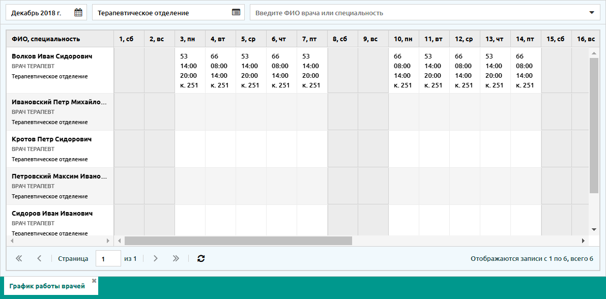
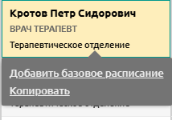
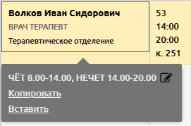
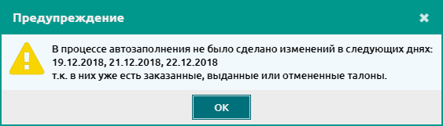
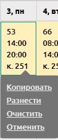
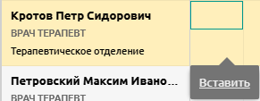
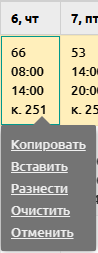
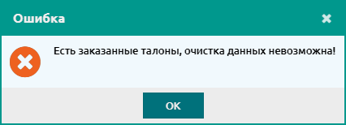
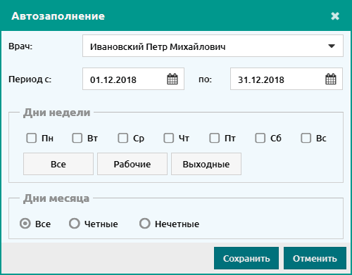
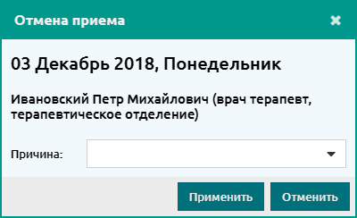

|
<< Click to Display Table of Contents >> График работы врачей. Основная форма |
  
|
|
<< Click to Display Table of Contents >> График работы врачей. Основная форма |
|
☝На форме используются типовые элементы, подробно описанные в разделе "Основные управляющие элементы". Для наилучшего понимания их работы в данном контексте, необходимо предварительно ознакомиться с их описанием.
Переход на форму происходит после нажатия на кнопку Далее из стартовой формы. Форма состоит из области фильтров и основной области в виде таблицы.

Область фильтров содержит поля ввода: месяца и года, отделения, ФИО врача (или специальности). Набор полей и принцип работы с ними такие же как и на стартовой форме. Выбранные значения влияют на отображаемые данные в основной области: если в фильтре выбрано отделение, то в таблице отображаются все врачи этого отделения и их графики; если в фильтре выбран один врач, то отобразится только его график; если указана специальность, то отобразятся графики всех врачей этой специальности.
Основная область представлена в виде таблицы, которую условно можно разделить на 2 области: область с врачами и область с графиками врачей.
Область с врачами представляет собой колонку таблицы ФИО, специальность, в ячейках которой расположены: ФИО врача, специальность, отделение, обслуживаемый участок (если есть). Область является не прокручиваемой в горизонтальном направлении: при проматывании области с графиками врачей остаётся на месте. Ячейка с врачом кликабельна: при клике левой кнопкой мыши появляется контекстное меню, которое может содержать пункты:
•Добавить базовое расписание. При клике открывается редактор базового расписания с полем ввода текстовой информации. После сохранения базовое расписание (БР) отображается в контекстном меню вместо данного пункта. Справа от БР располагается иконка Редактировать базовое расписание, при клике открывается редактор БР.
•Копировать. При клике в буфер обмена копируется текущий график врача на месяц, в контекстном меню появляется пункт Вставить. При переходе на другую ячейку (другого врача) и клике на Вставить, программа выдаст подтверждающее сообщение. При выборе Да график будет вставлен, при выборе Нет действие будет отменено.
 |
 |
☝Если в каких-либо днях уже есть заказанные, выданные или отменённые талоны, копирование графика будет выполнено исключая эти дни. По завершении копирования программа выдаст предупреждающее сообщение

Область с графиками врачей представляет собой колонки с названиями дней недели, которые пересекаются со строками врачей области с врачами. Колонок ровно столько, сколько дней в месяце. Колонки субботы и воскресенья выделены серым цветом. На пересечении образуются ячейки, предназначенные для отображения ежедневных графиков работы врачей. Область является прокручиваемой в горизонтальном и вертикальном направлениях в случае, если данные (все строки и колонки) не вмещаются в ширину и высоту экрана монитора. Если график дня уже заполнен, то в ячейке отображаются: количество талонов всего, время работы врача (рабочая смена), кабинет по умолчанию (указанный для данного врача в справочнике "Врачи"). Ячейка с графиком кликабельна: при двойном клике левой кнопкой мыши по пустой ячейке открывается редактор графика дня врачебного приёма. При одинарном клике левой кнопкой мыши по заполненной ячейке (график есть) появляется контекстное меню, которое содержит пункты:
•Копировать. При клике в буфер обмена копируется график дня соответствующего врача со всеми талонами, в меню появляется пункт Вставить. При клике на другой пустой ячейке дня (другого или этого же врача) и выборе Вставить график будет вставлен. Если в дне уже есть график, то при вставке программа выдаст подтверждающее сообщение. При выборе Да график будет вставлен, при выборе Нет действие будет отменено.
 |
 |
 |
☝Если в конечном дне есть заказанные/выданные талоны, то копирование в эту ячейку невозможно: при выборе Да программа выдаст сообщение об ошибке

•Разнести. При клике вызывается форма автозаполнения, где указываются: врач (по умолчанию берётся из текущего графика), период (с, по), дни недели (чекбоксы и кнопки для быстрой отметки чекбоксов: Все, Рабочие, Выходные) и дни месяца (чекбоксы Все, Четные, Нечетные). При выборе нужных настроек и нажатии Сохранить, программа выдаст подтверждающее сообщение. При выборе Да график данного дня разнесётся на другие дни согласно настройкам. При клике на Нет действие будет прервано. Разноска по сути является копированием с условиями. Разноску можно применять как к текущему врачу так и другому выбранному врачу.

☝Аналогично как и при копировании графика на месяц, если в каких-либо днях уже есть заказанные/выданные/отменённые талоны, то разноска графика будет выполнена исключая эти дни. По завершении разноски программа выдаст предупреждающее сообщение с указанием этих дней.
•Очистить. При клике программа выдаст подтверждающее сообщение. При выборе Да выбранный день будет очищен, при выборе Нет действие будет прервано.
☝Если в конечном дне есть заказанные/выданные талоны, то очистка невозможна: при выборе Да программа выдаст сообщение об ошибке, как и при копировании графика одного дня.
•Отменить. При клике вызывается редактор отмены, в котором нужно в поле Причина выбрать причину отмены приема. После нажатия Применить программа выдаст подтверждающее сообщение. При выборе Да прием и талоны будут отмены и в ячейке вместо информации о талонах, рабочей смене и кабинете будет указана эта причина отмены. При выборе Нет действие будет прервано.

При двойном клике по ячейке открывается редактор графика дня врачебного приёма.